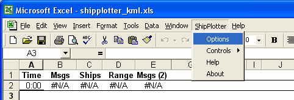

ShipPlotter AIS Reception Analysis &
Website Upload Spreadsheet/Program
User Guide for ShipPlotter.xls by Neal
Arundale
Creates a list of current ships in
CSV and/or HTML and/or XML and/or KML format
Dynamically graphs No of ships, Message rate and
Maximum range
Uploads any/all of above to a
webserver
Requirements
The AIS data must be received by the COAA ShipPlotter
program.
Excel 97, 2000, 2002, 2003 or 2007 must be installed.
Windows 98 or later.
Quick Start
Click this link, with
ShipPlotter running, open the spreadsheet & enable macros.
Excel will display a screen similar to this, but with no points on
the graph.
After 5 minutes (the default setting) the first point on the graph
will be plotted and the number of messages received since startup
will be listed above the graph.
Features (Click the links to see
the current files for Scarborough)
At a user defined polling interval the COAA ShipPlotter program is
interrogated.
The polling scheduled is controlled within Excel eliminating the use
of the Windows task manager.
The AIS data received is displayed in a graphical format.
You can choose to list current ships in CSV and/or HTML and/or XML
and/or KML format.
Any or all of the above formats may be automatically uploaded to a
webserver of your choice.
The Graph may
optionally be uploaded to a webserver
The CSV
list contains all the message data currently being decoded by the
COAA ShipPlotter program.
(MMSI,Name,Latitude,Longitude,COG,SOG,Heading,Rotation,Status,Accuracy,Type
of
Ship,Draught,Length,Destination,Call
sign,IMO no,ETA,Beam,GPS position fwd,GPS position port,Time last
message received, Share code ais data,Range,Bearing,CPA & CTA)
The HTML
list can be viewed with a browser on your PC or by users visiting
your website. If you wish to display a different subset of the ship
data received, this is done by altering the content on one sheet of
the Excel workbook. Similarly it is simple to alter the format with
a basic knowledge of HTML.
The XML
list may be used to interface with Google maps, click here to view the webpage when rendered
by Google maps. The default format I have set up will interface with
the HTML sample webpage vbship4.zip which can be downloaded from the
files section (vbscripts) of the ShipPlotter
forum.
The KML list again will interface with Google
maps, in this case you can use the Google server to combine the
ship's data with a map. This is done by just going to a link
directly in this case http://maps.google.com/maps?q=http://web.arundale.co.uk/docs/ais/data.kml?
The default format is almost as simple as it can be so that you can
see the wood from the trees.
Optionally, you will be informed when you start the program if I
have uploaded a new version of the Excel code (Win 2000 on).
Tabs
If you click on the Data
tab (at the bottom on the Excel screen) you will see a list of the
ships, somthing like below.
If you click on the Summary
tab you will see a summary of the data something like this
The HTML, XML and KML tabs are used for
uploading the data to a website, for more information go to AIS Data Analysis Website Upload
Guide
ShipPlotter > Options
There are a number of options which affect the way you will
see the data being received. These are simply changed by selecting
the options box from the Excel menu bar.

The Options box will be displayed
|
Refresh is the
frequency ShipPlotter will be polled and the Graph updated,
set to 0 stop polling
Graph Range sets the
number of points that will be displayed on the time axis of
the graph. By default the last 500 entries are kept so you
can change this to display a larger number of points
retrospectively.
Message Rows are the
number of rows of data that will be displayed above the
graph. The default is the last 5.
Max Ship Range is
the maximum range ships ais data will be loaded into the
spreadsheet from the Shipplotter data. This is of use
when TCP messages are being received by shipplotter but you
are only interested in ships within a certain range from
your home location. If set to 0 all ships are loaded.
Check for Updates if
unticked
Excel will not check each time it is started whether there
is an updated version on my server.
|
ShipPlotter > Controls
There are a choice of the following options
Start
Restarts
the
scheduler - if you have stopped it
Stop
Stops
the
scheduler - if running
Purge
Clears
all
the data obtained from ShipPlotter
ShipPlotter > Help
Will display this page
ShipPlotter > About
Will display a message box similar to the one below. If you
wish to report a bug, this is very helpful.
Uploading to a website
Detailed instructions may be obtained from the page AIS Data Analysis Website Upload
Guide
Changing the Layout of the
Worksheets
You should not change the layout of the Graph or Data worksheets.
You may change the layout of the Summary Sheet, or add other Sheets
including Graphs, that link to any other worksheet.
Changing the Summary
The Summary sheet is a normal Excel pivot table linked to the Data
worksheet. I have included it as a "sample"
Click on any cell within the
summary table
Right click and select wizard
Click on Layout
Drag the Headings into the
table & Finish
If you double click on any
total you will get a new sheet created containing only the
rows off the Data
worksheet making up
the total.
You can use pivot tables to summarise any data held on an Excel
worksheet. It is an extremely powerful way of not only listing
totals but also splitting values into ranges and graphically showing
the result. For example you can simply plot a Graph of the Speeds of
ships in bands of say 5kn and the graph will be updated each time
the worksheet is updated. Or you could plot a Graph of Range vs
Bearing.
For more information I suggest you Google Pivot Tables.
Changing the VBA Code
See here more information
about altering the VBA code